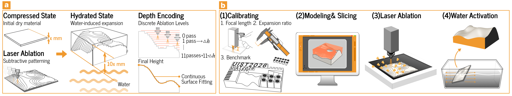

Mechanism and Fabrication
The Mechanism and Fabrication section explains the principles and processes behind LaserMorph. It is divided into four main parts: First, it describes how the system works, including the workflow, mechanism, and advantages. Then, it covers the preparation of materials, the environment, and the necessary equipment. The section continues with a detailed fabrication process, including pre-processing, calibration, laser cutting, and activation. Finally, it discusses key laser parameters and provides tips for successful fabrication, along with application examples. Each part provides a clear step-by-step guide to understanding and implementing LaserMorph.

Understand How It Works
The Understand How It Works section is organized into three key parts: Workflow, Mechanism, and Advantages. The Workflow section explains the step-by-step process of how LaserMorph operates. The Mechanism part dives into the technical principles behind the transformation from 2D to 3D forms using laser processing. Finally, the Advantages section highlights the benefits of using this method, such as its efficiency and the ability to create complex 3D shapes without the need for intricate models or molds.
Workflow

LaserMorph establishes a closed-loop end-to-end computational manufacturing workflow, which involves four key steps: hardware and material calibration, importing or designing the model, laser engraving, and water activation. Each of these steps plays a critical role in ensuring precision, consistency, and efficient transformation of 2D to 3D forms.
- Hardware and Material Calibration
The first step involves calibrating the hardware and materials to ensure consistency across different power platforms. Users calibrate the system by processing standardized calibration pieces (Sponge Boat) using a defined calibration procedure. This ensures that the parameters remain consistent, allowing for reliable results when transitioning between various laser platforms with different power settings. - Importing or Designing the Model
In this step, users can either import existing models or design new ones using a parametric design tool integrated into the Rhino/Grasshopper environment. The tool provides real-time 3D physical simulations, enabling users to visualize the final shape before fabrication. Additionally, it offers targeted material selection guidance, helping users choose the best material for their design. This step ensures that the design is optimized for the laser engraving process and allows for adjustments based on simulation feedback. - Laser Engraving
Once the model is ready, the complex 2.5D height field is converted into laser energy paths. These paths are precisely followed during the engraving process, where a single-pass engraving technique is used to etch the designed geometry into the material. This step is crucial for encoding the geometric potential into the material, preparing it for the final 3D shape transformation. - Water Activation
The final step in the process is water activation, where moisture triggers the release of the material's "latent volume." In just a few seconds, the material undergoes a dramatic transformation, transitioning from a flat, 2D form into a dynamic 3D shape. This activation step enables LaserMorph to achieve rapid volumetric changes without the need for complex machinery or multi-step assembly, making the process quick and efficient.
Mechanism
LaserMorph works by utilizing precise control of laser paths and ablation depth to transform flat 2D designs into 3D volumetric shapes. The process begins by adjusting the laser's speed and power to accurately etch the depth and width of the sponge material. These adjustments allow for pre-volume editing while the material remains unexpanded. By controlling the laser paths, LaserMorph ensures that the material will expand into the desired 3D form after absorbing water, effectively triggering the pre-designed transformation.
At the core of LaserMorph is its ability to leverage the high throughput processing capacity of standard laser cutting platforms. This allows design instructions to be quickly encoded into the material within a very short processing time. Unlike traditional methods that might involve complex multi-step processes, LaserMorph can directly transition from a 2D design to a full 3D shape, enabling a much faster and more efficient production process.
Laser engraving in LaserMorph is more than just the creation of simple 2D patterns; it involves precise path control that allows the creation of complex 3D geometries with continuous curvatures. This includes generating surfaces with positive and negative Gaussian curvatures, which are typically difficult to achieve with traditional 2D manufacturing methods. Through precise laser path adjustments, LaserMorph can generate these complex shapes while maintaining consistent depth and structure.
Another important aspect of the mechanism is the interaction between the laser-engraved material and water. Once the material is laser-engraved, it enters a phase where it is activated by water, which causes the material to expand and release its "latent volume." This rapid volumetric change is what enables LaserMorph to create dynamic 3D shapes from flat 2D forms. The process is extremely quick, taking only a few seconds to transform the material into its final shape.
In addition, LaserMorph enables reversible transformations. After the material has been activated and transformed into its 3D shape, it can be dried, compressed again, and reactivated multiple times. This ability to repeat the process without the need for new material allows for sustainability and reduces material waste, which is a crucial part of the mechanism.
The entire system relies on the precision of laser cutting to encode the geometric design into the material, followed by the water activation to trigger the 3D transformation. This method eliminates the need for complex molds, multi-step assembly, or additive manufacturing, offering a streamlined and efficient alternative for 3D fabrication.
Advantages
Traditional methods like laser cutting, 3D printing, and technologies such as GyFoam each have their drawbacks. Laser cutting is fast but typically limited to 2D processing, meaning it cannot handle the complexity of creating 3D shapes or achieving volumetric transformations. 3D printing, while capable of producing 3D forms, is much slower and less efficient for large-scale production, particularly when it comes to creating objects with intricate geometries. Methods like GyFoam, which utilize foam expansion, offer some ability to create 3D shapes but involve complicated processes, including the need for multiple steps and specialized equipment, which limits their scalability and efficiency for fast prototyping.
LaserMorph addresses these issues by providing a method that eliminates the need for molds, complex equipment, and lengthy assembly processes. The following are some of its key advantages:
- No Molds Required
LaserMorph does not require molds or complex assembly steps. It simplifies the manufacturing process by directly encoding 2D designs into 3D forms through laser engraving, without the need for additional tools or molds. - Water Activation
The use of water to trigger the transformation is a unique feature of LaserMorph. The material undergoes a rapid volumetric change when activated by water, allowing for quick and dynamic shape-shifting from flat to 3D in a matter of seconds. - Reusability
Unlike many other methods, LaserMorph materials can be reactivated multiple times. After drying, the material can be compressed and then reactivated, allowing for repeated use without consuming new material, supporting sustainability and reducing waste. - Low-Cost and Efficient
The process is cost-effective, leveraging the high throughput capabilities of standard laser cutting tools. This method avoids the need for expensive machinery, molds, or multi-step assembly, making it more accessible and affordable for rapid prototyping and small-scale production. - Compressible for Transport
The final 3D objects created with LaserMorph can be compressed back into their flat, 2D form after use. This feature makes the material easy to store and transport, reducing logistics costs and space requirements.
In summary, LaserMorph combines the best aspects of laser cutting, 3D printing, and other morphing technologies, eliminating the need for molds, reducing time and costs, and enabling the creation of reconfigurable 3D objects in an efficient and sustainable manner.
Material Preparation
The Material Preparation section introduces three key aspects: Material, Environment, and Equipment. Material refers to the compressed cellulose sponge, available in various thicknesses. Environment highlights the importance of a stable setting, as fluctuations in the environment may affect the material's expansion. Equipment includes the laser cutting platform, which is essential for engraving the material before the activation process.
Material
Cellulose Sponge is a highly absorbent and versatile material commonly used in various applications, including those in manufacturing processes such as LaserMorph. The material is primarily composed of cellulose, a natural polymer derived from plant fibers, making it biodegradable and environmentally friendly. The sponge comes in various thicknesses, ranging from 1mm to 10mm, to accommodate different project needs.
The specific material we use in LaserMorph is compressed cellulose sponge, which can be activated through a water absorption process. The material is available in thicknesses of 1mm, 1.5mm, 2mm, 3mm, 6mm, and 10mm, each offering different expansion and transformation characteristics based on their thickness.
- 1mm, 1.5mm, and 2mm: These thinner sponges are ideal for fine, detailed laser engraving. Their lower thickness allows for quick and precise activation, making them suitable for smaller or more intricate designs that require rapid expansion and accurate transformation.
- 3mm: This thickness provides a good balance between material strength and flexibility. It is suitable for moderately detailed designs, offering enough depth for the laser to engrave effectively while maintaining good structural integrity during the water activation process.
- 6mm and 10mm: The thicker sponges are used for more robust applications, where a larger volume of expansion is required. These materials are perfect for larger 3D transformations, where more material is needed to achieve the desired shape. The increased thickness allows for greater volume retention after water activation and supports more substantial shape-shifting.
The key feature of Cellulose Sponge is its ability to undergo significant volume expansion when exposed to water. When compressed, the sponge retains its compact form, and upon activation, it quickly absorbs water and expands, releasing the pre-encoded geometric information stored during the laser engraving process. This expansion is rapid, typically occurring within seconds to minutes, and it does not require any external heating or chemical treatments. This makes LaserMorph an efficient, quick, and sustainable method for creating 3D shapes from a flat 2D material.
The Cellulose Sponge used in LaserMorph is characterized by its ability to be reactivated multiple times. After activation, the material can be dried and re-compressed, allowing for repeated transformations. This reusability makes it an environmentally friendly option, as it minimizes waste and supports sustainable manufacturing practices.
Environment
For optimal performance of the LaserMorph process, a controlled and stable environment is essential. The workspace should ensure stable temperature and humidity, effective dust control, proper ventilation, and a clean and organized area to allow the laser cutting system to operate efficiently and safely. Each of these factors plays a significant role in achieving precise, high-quality results during the cutting and activation processes.
- Stable Temperature and Humidity
Maintaining consistent temperature and humidity levels is crucial for both the laser equipment and the material. Fluctuations can cause changes in the material's reaction to the laser or the laser system's performance, leading to inconsistent results. A stable environment ensures that both the material and the equipment perform optimally. - Dust Control and Protection
Laser cutting generates debris, especially when working with materials like cellulose sponge. It is important to have an effective dust collection system to prevent dust and debris from interfering with the cutting process or contaminating the material. The system also helps to maintain a clean workspace and protect the equipment from damage caused by the accumulation of dust. - Adequate Ventilation
The laser cutting process, particularly with cellulose sponge, produces smoke and gases. An efficient ventilation system is necessary to remove these byproducts and ensure a safe working environment. A local exhaust system is particularly effective in extracting smoke directly from the cutting area, improving air quality for the operator. - Clean and Organized Workspace
A clean and organized workspace is essential to prevent any obstructions that could affect the laser's path or the accuracy of the cuts. Keeping the area free of debris and ensuring that the equipment is regularly maintained will help avoid interference with the cutting process, ensuring consistent and high-quality results.
Equipment
For LaserMorph, the selection of laser cutting equipment is essential for achieving precision and efficiency. The process can be carried out using two types of laser cutting platforms: consumer-grade laser cutters and low-cost DIY laser systems. Both types of platforms can effectively handle the laser engraving of compressed cellulose sponge (the material used in LaserMorph), though they differ in power output and suitability for different project scales.
Consumer-grade laser cutters are designed for more accurate and efficient cutting. These machines typically feature a higher power output, allowing them to cut through thicker or denser materials more easily, providing quicker and cleaner results. The higher power also enables more detailed engraving, making it ideal for projects requiring fine and precise work.
On the other hand, low-cost DIY laser platforms offer a more affordable alternative. These systems are typically equipped with 10W or 20W lasers, which are sufficient for smaller-scale or simpler projects. While they may not match the precision or speed of consumer-grade cutters, they are a cost-effective option for those experimenting with the LaserMorph process or working on small batches. The affordability of these DIY systems makes them accessible to a wider range of users, especially for prototyping and initial tests.
Both types of equipment rely on the same basic laser principles, where a focused laser beam is used to etch or cut through the material. By using a laser cutting platform, the material is engraved with the necessary patterns and shapes that will trigger the subsequent 3D transformation when activated by water.
Fabrication
The LaserMorph manufacturing process involves several essential steps: pre-processing preparation, calibration, laser cutting, and activation. Each step is critical for achieving the precise transformation of 2D designs into 3D shapes. Below is a detailed breakdown of each step.
Pre-processing Preparation
Before starting the laser cutting process, the material must be properly prepared to ensure consistent and accurate results. This step ensures that the material is in the correct state for effective engraving and activation.
- Material Selection and Preparation: The material used in LaserMorph is compressed cellulose sponge, which must be in a flat, compressed state before cutting. The material thickness varies, ranging from 1mm to 10mm, and consistency in thickness is necessary for uniform results.
- Initial Material State: The material should be free from wrinkles, moisture, or any damage. Ensuring the material is clean and consistent will contribute to a smoother and more accurate laser cutting process.
- Preparation for Cutting: The material must be placed flat on the laser cutting bed and securely fixed in place to prevent shifting or deformation during the cutting process.
Calibration: Testing and Development
The LaserMorph manufacturing method relies on the laser creating different depths of structures on the material's surface and utilizing the volume expansion of the material after absorbing water to produce a 3D form. Therefore, the final result depends not only on the design model but also on the laser equipment, material condition, and processing parameters. Different users may use different power-level machines (such as 20W, 30W, etc.), and most laser software typically controls the power as a percentage (%) rather than the actual wattage. As a result, the same set of parameters may produce different results on different machines. Based on this, our project does not provide a fixed parameter table but instead offers a parameter calibration process, allowing users to quickly find stable processing parameters based on their machine and material.
Main parameters to adjust include power, speed, line spacing, and the number of passes. These parameters together determine the laser's energy input on the material. Generally, higher power leads to deeper cuts, slower speed gives more time for energy application, and smaller line spacing increases the energy per unit area. However, there are differences between machines and materials, so simple tests are needed to find the stable combination.
Parameter Calibration Process:
- Prepare Materials Consistent with Actual Production: Ensure the material is the same thickness, state, and fixation method as in actual production. Variations in material batches may affect expansion behavior, so it is recommended to conduct tests on materials from the same batch.
- Line Spacing Test: Set different cutting line spacings (e.g., 0.10, 0.15, 0.20, 0.25, 0.30, 0.35, 0.40 mm) in the same test piece. After processing, observe if the structure is continuous, the surface is uniform, and if any significant ablation appears. Choose the most stable line spacing as the base parameter for subsequent processing.
- Power and Speed Matrix Test: Set the power from 50%-100% and the speed from 4000-8000, and find the suitable parameter range for the current equipment. By testing one sample, you can quickly compare how different parameter combinations affect cutting depth.
Standard Test Sample
To make the calibration process more intuitive and reproducible, we integrate multiple test modules into a physical test sample. This sample is similar to the small boat test model in 3D printing, and by incorporating various test modules in the same structure, users can verify multiple parameters and structural capabilities in one processing cycle. The test sample includes the following modules:
- Minimum Text Module: Tests the smallest font size that can be stably processed by the laser, determining the minimum readable text size. It is recommended to display sizes of 1.0cm in diameter, with 0.75cm being recognizable, and anything smaller is unusable.
- Tactile Module: Tests the tactile effects of different texture structures after expansion, helping to choose appropriate surface structures for interaction or interface design.
- Mortise and Tenon Structure: Tests the stability of structural connections after material expansion, and the tactile test module on the sample can be replaced as well.
- Minimum Wall Thickness Module: Tests the minimum wall thickness for maintaining the shape of a circular tube after processing and expansion. The safe wall thickness (outer diameter - inner diameter difference) threshold is 0.8mm, and it is recommended to set it above 0.8mm.
- Slope Module: Observes the ability to generate sloped surfaces from the gradient depth structure.
- Irregular Curvature Module: Tests the continuity and precision of complex shapes after expansion.
- Cutting Depth Test: Verifies the manufacturing capabilities of the current device and material combination, providing parameter references for subsequent designs.
Standard Sample Parameters
The parameter calibration process involves: user input information - system generates test parameter combinations - generate and download test graphics - user completes processing - input measurement results - system generates unit depth parameter table.
Users need to input the following information:
- Machine Rated Power (e.g., 20W, 30W)
- Desired Single Cutting Depth Range (default 0.15-0.40mm)
- Line Spacing (default using calibration sample design value 0.20mm)
- Number of Passes (default 5 passes)
The system can automatically find the most accurate parameters for a single cutting depth of 0.15mm, 0.20mm, 0.25mm, 0.30mm, 0.35mm, 0.40mm based on the results measured by the user and generate the unit depth parameter table for the user's equipment.
Laser Cutting
In this step, the laser cutter engraves the material based on pre-designed paths, encoding geometric information that will later trigger the 3D transformation during the activation process. The cutting files generated by the tool are responsible for distributing user-adjustable parameters across different layers, assigning different cutting depths, and generating annotations for cutting depth on the side of the cut path. The cutting depth is indicated with a 4mm height Arial font for numerical values, and the output is in DXF format.
- Engraving Process: During this step, the laser follows the pre-designed paths to engrave various depths into the material. The precision of the laser path is critical to ensure that the geometric information required for 3D transformation is accurately encoded.
- Depth Control: The engraving depth is crucial, as it determines the material's expansion rate during activation. Adjusting the laser's power and speed helps achieve the desired cutting depth for optimal results.
- Engraving Patterns: Complex geometries, including continuous curves and intricate designs, can be engraved into the material. The accuracy of the laser path is essential for achieving precise 3D transformation after activation.
- Multiple Passes and Overlapping Cuts: For thicker materials, the laser may need to make multiple passes over the same path to reach the desired depth. This process is adjusted based on material thickness and laser power to ensure proper depth control without overcutting, which could lead to weakened material or irregular expansion.
Tool-Generated Cutting Files: The tool-generated cutting files assign different layers based on user-defined parameters, which the laser will follow during the engraving process. For instance, users can modify parameters like cutting speed, power, and line spacing. After the user completes the engraving, they need to input the measured total cutting depth. The tool automatically calculates the single cutting depth by dividing the total depth by the number of passes and adds the information to the previously generated parameter table. The system then automatically identifies the parameters closest to cutting depths of 0.15 mm, 0.20 mm, 0.25 mm, 0.30 mm, 0.35 mm, and 0.40 mm based on the user's measured results, and generates a corresponding unit depth parameter table for the user's equipment.
Activation
Activation is the final step in the process where the laser-engraved material undergoes a transformation by absorbing water. This triggers the expansion of the material, allowing it to transform from a flat 2D shape into a 3D form.
- Water Activation: Once the material is cut, it undergoes water activation, causing it to expand by absorbing moisture. This expansion triggers the release of the encoded 3D shape, transforming the material from a 2D flat sheet to a 3D form.
- Expansion Rate: The material can expand up to 10 times its original thickness in the vertical direction. This rapid expansion occurs as the material absorbs water and releases the pre-programmed volume.
- Activation Time: The activation process happens quickly, typically in a few seconds to minutes, without the need for external heating or chemical treatments.
- Reactivation: After activation, the material can be dried and re-compressed for storage or transport. It can also be reactivated multiple times, reducing waste and supporting a sustainable manufacturing process.
- Drying and Re-compression: Once activated, the material can be dried to lock in its 3D form. It can then be compressed back to a flat shape, making it easier to store or transport for future use. Drying is recommended at 120C for 45 minutes in a ventilated oven to maintain consistent results.